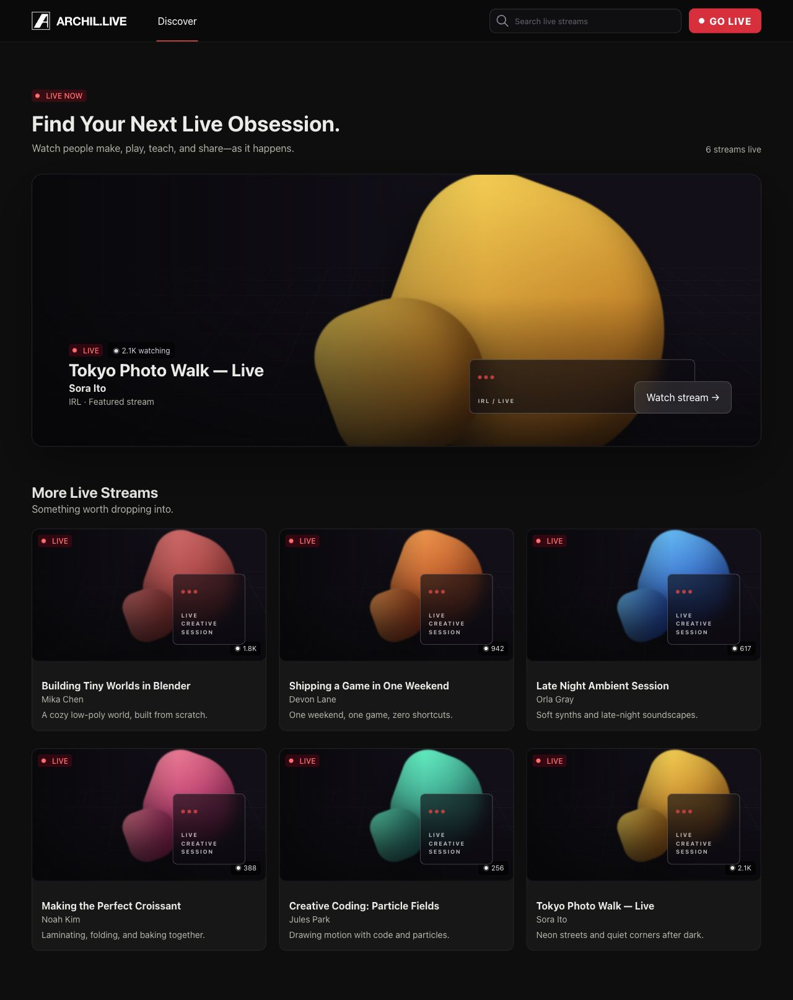
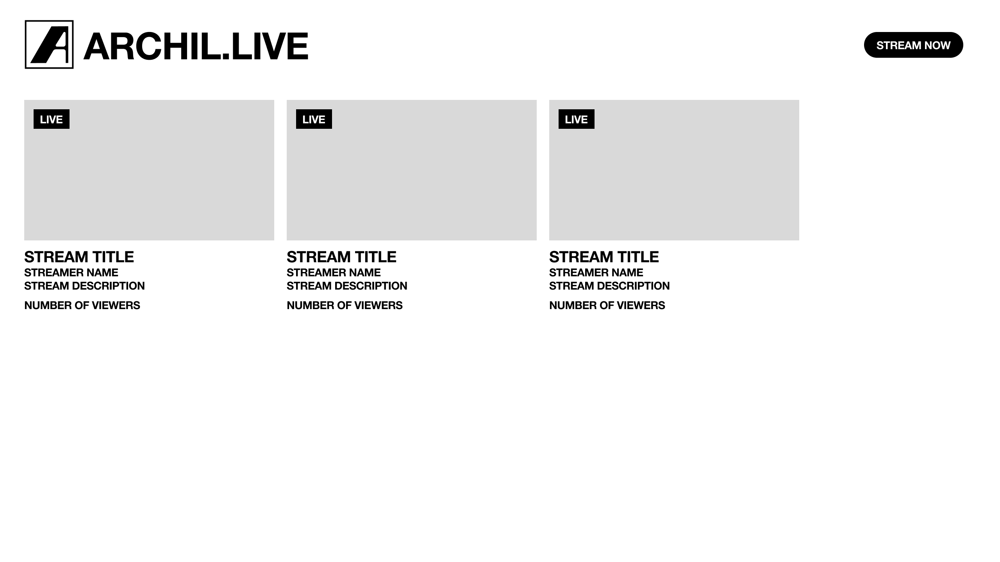
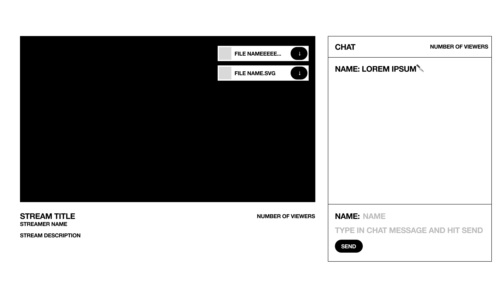
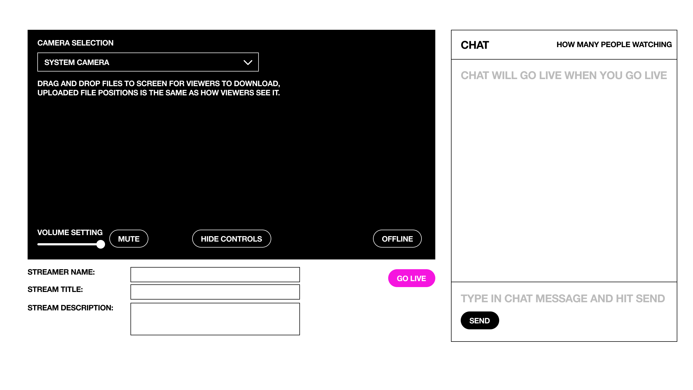
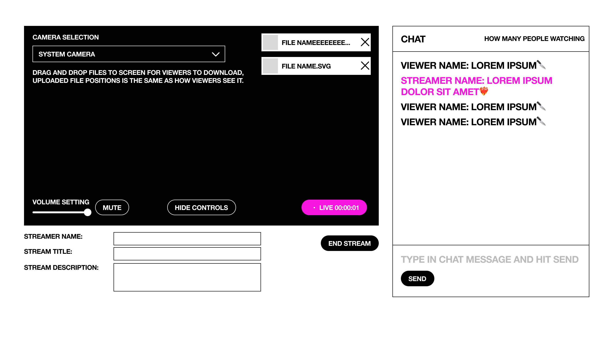
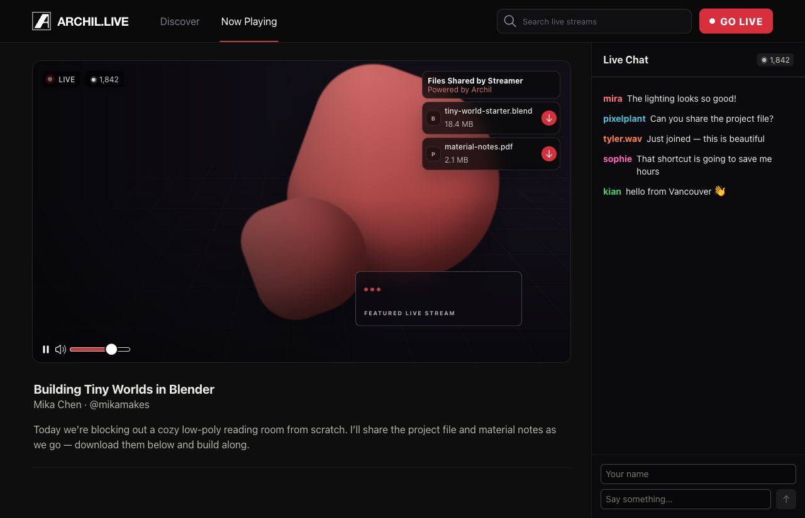
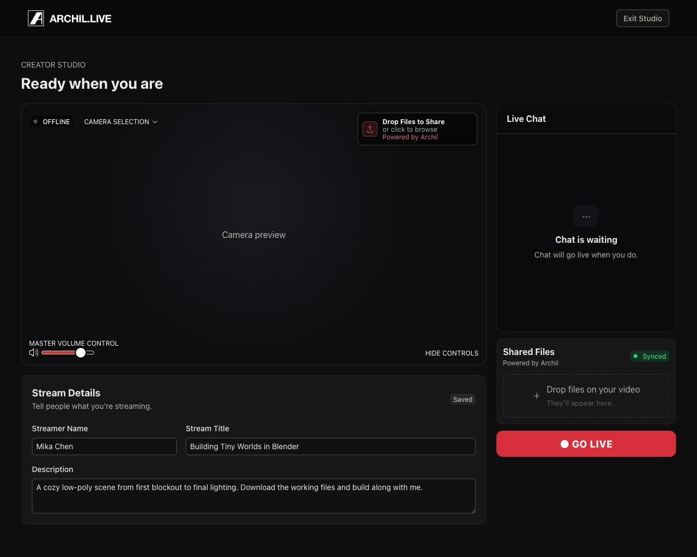
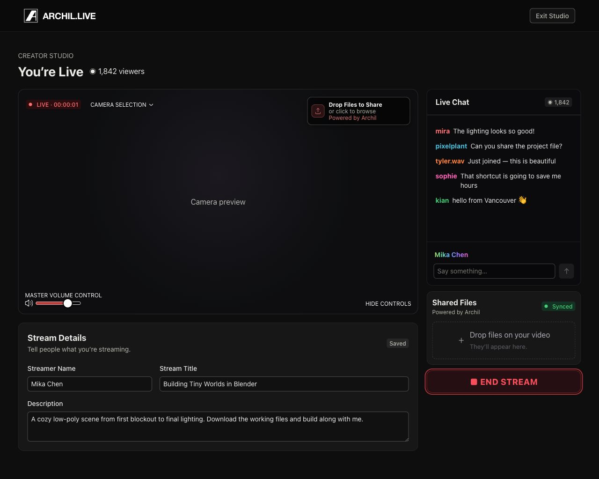

Make live content scannable
The landing page uses a direct grid of active broadcasts with titles, streamer names, descriptions, and viewer counts.
A livestream platform that lets broadcasters share downloadable files directly inside the viewing experience.

I took Archil Live from a four-screen wireframe flow to a polished dark-mode interface for discovering, watching, and creating livestreams with files built in.
Livestream viewers often need more than the video itself: slides, references, source files, or takeaways. The concept gives broadcasters a direct way to place downloadable files on the stream while keeping chat, audience count, and core controls visible.
The landing page uses a direct grid of active broadcasts with titles, streamer names, descriptions, and viewer counts.
Downloadable assets appear over the video in the same positions selected by the broadcaster, connecting each file to its presentation context.
Camera, audio, metadata, chat, file placement, and broadcast status are grouped so the streamer can prepare before going live and monitor the session afterward.
The viewer moves from a simple directory of active streams into a focused room where video, files, chat, stream details, and audience count share one screen.


Before the broadcast, the streamer chooses a camera, checks audio, enters stream details, and positions shared files. Going live changes the status and primary action while preserving the working layout.


The finished UI adds stronger discovery, clear live and viewer states, polished controls, editable stream details, and visible Archil file syncing without losing the directness of the original flow.



An end-to-end livestream UI that makes Archil’s files part of the live event—not a separate link viewers have to find later.